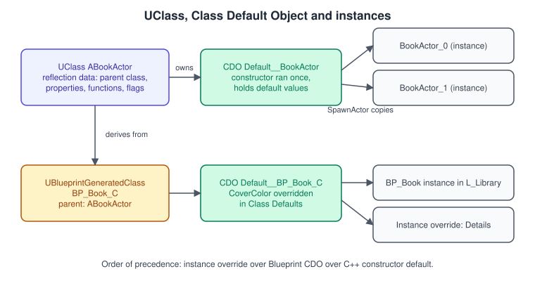
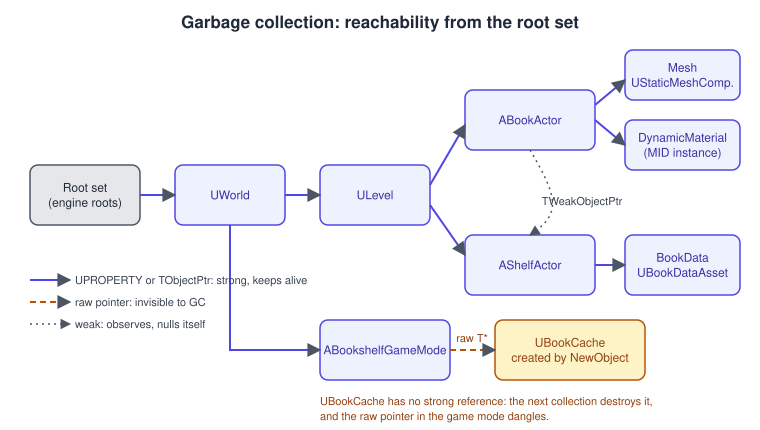
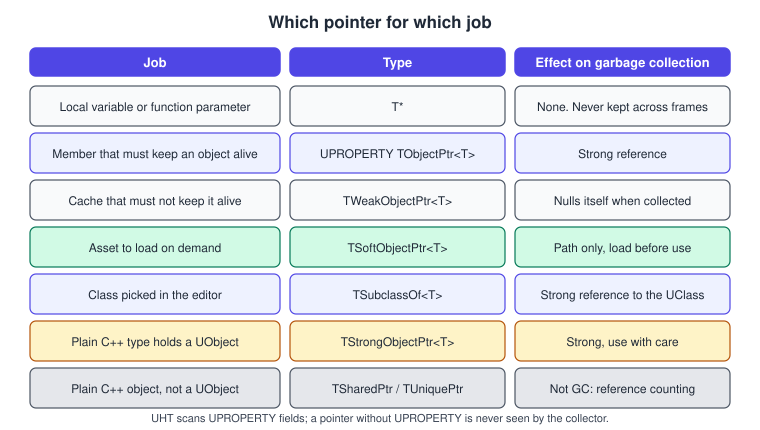

UObject, Reflection and Garbage Collection
|
This content was generated with the assistance of AI and should be verified against the official documentation before being relied on in production. |
Every gameplay type in Unreal Engine that you can place in a level, show in the Details panel, save to disk, replicate over the network or call from a Blueprint is a UObject, or a plain struct or enum that the same
reflection machinery describes. Standard C++ has no reflection, so Unreal adds its own: you mark a class, a field or a function with a macro, a tool reads your headers at build time and writes extra C++ that registers
the metadata, and a garbage collector uses that metadata to find which objects are still in use. This page explains that system and writes the first real classes of the Bookshelf with it.
The facts on this page were checked in November 2026 against the Unreal Engine 5.8 documentation (5.8 was released on 2026-06-17; the latest hotfix found at that date is 5.8.4). Everything described is part of the
engine’s C++ API and works on every platform Unreal builds for: Windows, macOS, Linux, Android, iOS and the consoles. The code targets a module named Bookshelf created from the Third Person template, built with Visual Studio 2022 17.14 or newer
(VS 2026 recommended on Windows) or Xcode on macOS. The running example introduces UBookDataAsset, UBookCache and the IBookInteractable interface; the actors that use them are in
Actors and Components, and the module layout is in Project Structure and Modules.
Unity developers will recognise some of this from UnityEngine.Object and ScriptableObject, see
ScriptableObjects and Data-Driven Design, but the lifetime rules differ in important ways.
What the object system gives you
The UObject class is the base of the object system. The Epic documentation lists what a class derived from it gets for free: garbage collection and reference updating, reflection, serialization and runtime type information,
automatic default property updates and initialisation, automatic editor integration and network replication. Structs marked with USTRUCT share the reflection and serialization features but are value types and are not garbage collected.
-
Garbage collection. You allocate
UObjectinstances with the engine’s own functions and never delete them. The collector destroys any object that nothing reachable refers to. -
Reflection. A running program can ask a class for its parent, its properties and its functions, by name, with their types and metadata. The editor builds the Details panel from this, Blueprints call functions through it, and the network layer walks it to replicate properties.
-
Serialization. Reflected properties are saved into
.uassetand.umapfiles and loaded back, with versioning and redirects, without hand-written save code. -
Defaults and inheritance. Each class has a template object whose property values new instances copy, and Blueprints can derive from native classes and override those values.
-
Editor integration. Specifiers such as
EditAnywhereandCategorydecide what appears in the editor and how.
The price is conventions: a naming scheme, a generated header, macros in every declaration, and the rule that a pointer the engine cannot see does not protect its target. The rest of the page takes these one at a time.
Source: Objects in Unreal Engine and Reflection System
The class family and naming prefixes
Unreal’s coding standard prefixes the name of every type with a letter, and the build tool checks some of them. The prefix tells you the base class and whether the type is garbage collected.
| Prefix | Derived from | Examples in the Bookshelf |
|---|---|---|
|
|
|
|
|
|
|
Plain structs and classes, not a |
|
|
Enumerations |
|
|
Interface classes that hold the functions of an interface |
|
|
Templates |
|
|
Slate widgets (see UMG, Slate and CommonUI) |
|
The Epic page on gameplay classes states the two prefixes that matter most here: A classes derive from AActor and U classes from UObject. The full set of prefixes, and the rest of the formatting rules, are in the
coding standard, summarised on Unreal C++ Idioms.
Unreal Header Tool and the generated header
The reflection macros are not C++ language features; they expand to almost nothing in the compiler’s eyes. The work is done earlier by Unreal Header Tool (UHT). Unreal Build Tool (UBT) invokes UHT on every module’s headers first. UHT parses the declarations,
collects the class, property and function metadata, and writes a .generated.h header and a .gen.cpp source file next to the intermediate files. UBT then compiles your sources together with the generated ones.
At startup the module’s generated code registers each class with the object system. In UE 5.1 UHT was rewritten in C# and integrated into UBT; the old C++ version was deprecated.
What this means for the code you write:
-
Each header that declares reflected types ends its list of includes with
#include "Name.generated.h". The Epic page states that this must be the last include in the header. Putting another include after it breaks the generated declarations. -
The first line of every reflected class body is
GENERATED_BODY(). It expands to the generated constructors, theStaticClassfunction, the type aliases such asSuper, and the property and function glue UHT wrote. -
UHT understands only a subset of C++. It reads the declarations it needs and ignores function bodies. Preprocessor blocks around reflected members are limited to a few forms, for example
WITH_EDITORandWITH_EDITORONLY_DATA. Hide a reflected member behind another condition and UHT still sees it, while the compiler does not, which fails the build in confusing ways. -
Changing a reflected declaration (a new
UPROPERTY, a new specifier, a changed signature) requires UHT to run again. A full build or a Live Coding patch does this; changing a function body does not. -
Type and function names are matched by name at runtime, so a function name that is declared twice in one class hierarchy, or a type name that changes, breaks Blueprints and saved assets that refer to it. Core redirects, in
DefaultEngine.ini, record renames.
UCLASS, USTRUCT, UENUM and UINTERFACE
UCLASS
A class derived from UObject carries the UCLASS macro, optionally with specifiers in parentheses, and GENERATED_BODY() as the first statement. The commonly used specifiers:
| Specifier | Effect |
|---|---|
|
The class can be used as the base of a Blueprint. The opposite, |
|
The class can be used as a variable type in Blueprints, even if nobody derives a Blueprint from it. Data assets and structs used as pin types need it. |
|
The class cannot be placed in a level or created directly; it exists only as a parent. In the Epic examples |
|
Only the type information is exported from the module, so other modules can cast to the class but cannot call most of its functions. Use it to shorten compile times for classes that other modules only name. |
|
Properties marked |
|
Objects of the class are never saved. |
|
Instances can be created in the Details panel from the property’s drop-down, used with |
|
Make a component class appear in the Add Component menu of the Blueprint editor. |
|
Instances must have an object of the named class as their outer. |
Metadata such as DisplayName or ToolTip exists only in the editor, and the Epic page warns that game logic must not depend on it.
USTRUCT and UENUM
A USTRUCT is a value type: it is copied, it is not garbage collected, and it can contain reflected properties that the editor, serialization and Blueprints understand. Structs that Blueprints should use as variable types are marked BlueprintType.
A UENUM makes an enumeration visible to the editor and Blueprints; a Blueprint-visible enum must have an underlying type of uint8.
// BookTypes.h
#pragma once
#include "CoreMinimal.h"
#include "BookTypes.generated.h"
UENUM(BlueprintType)
enum class EBookCondition : uint8
{
New UMETA(DisplayName = "New"),
Worn UMETA(DisplayName = "Worn"),
Damaged UMETA(DisplayName = "Damaged")
};
USTRUCT(BlueprintType)
struct FBookStats
{
GENERATED_BODY()
UPROPERTY(EditAnywhere, BlueprintReadWrite, Category = "Book")
int32 PageCount = 120;
UPROPERTY(EditAnywhere, BlueprintReadWrite, Category = "Book")
EBookCondition Condition = EBookCondition::New;
UPROPERTY(EditAnywhere, BlueprintReadWrite, Category = "Book")
float Weight = 0.45f;
};Source: Reflection System and Gameplay Classes in Unreal Engine
UINTERFACE: two classes for one interface
An interface lets unrelated classes share a set of functions. Because Blueprints need a UObject-derived type for the reflection system, an Unreal interface is two classes: an empty U-prefixed class declared with UINTERFACE, which makes the interface visible to reflection,
and an I-prefixed class that holds the functions and that implementing classes inherit from. The Blueprintable specifier lets Blueprints implement the interface; for that, every non-static function must be a BlueprintImplementableEvent or a BlueprintNativeEvent.
// BookInteractable.h
#pragma once
#include "CoreMinimal.h"
#include "UObject/Interface.h"
#include "BookInteractable.generated.h"
UINTERFACE(MinimalAPI, Blueprintable)
class UBookInteractable : public UInterface
{
GENERATED_BODY()
};
class BOOKSHELF_API IBookInteractable
{
GENERATED_BODY()
public:
/** Called when a player grabs or reads the object. Returns true if the interaction was handled. */
UFUNCTION(BlueprintNativeEvent, BlueprintCallable, Category = "Book")
bool Interact(AActor* Interactor);
};A C++ class implements it by inheriting from the I class and defining the _Implementation function. Callers must not call Interact directly; the generated static Execute_Interact wrapper runs both C++ and Blueprint implementations.
To test whether an object implements the interface use Object->Implements<UBookInteractable>(), which works for C++ and Blueprint implementers; Cast<IBookInteractable>(Object) finds C++ implementers only.
// In ABookActor.h (see Actors and Components)
// class ABookActor : public AActor, public IBookInteractable
// virtual bool Interact_Implementation(AActor* Interactor) override;
// A caller that does not know the concrete class:
void UBookshelfInteraction::TryInteract(AActor* Target, AActor* Interactor)
{
if (IsValid(Target) && Target->Implements<UBookInteractable>())
{
IBookInteractable::Execute_Interact(Target, Interactor);
}
}Source: Interfaces in Unreal Engine
UPROPERTY: what the engine sees of your data
A member variable is reflected only if it carries UPROPERTY. The specifiers choose who can see and edit it and how it is saved and replicated.
| Specifier | Effect |
|---|---|
|
Editable in the Details panel on the class defaults and on every instance. |
|
Shown but not editable. Use it for component pointers: you want to see the component, not replace it. |
|
Blueprints can read and change the value, or only read it. |
|
The group under which the property appears, for example the name Book; nested groups are separated by a vertical bar. |
|
The value is sent over the network, optionally with a function called on the client when it arrives. See Networking and Replication. |
|
Not saved or loaded; the value is zero-filled when loaded. |
|
Marks the field for inclusion in a save-game or checkpoint archive. |
|
Loaded from an ini file of the class’s config category. |
|
For object properties: each instance owns its own copy of the object assigned in the defaults. |
|
Lets Blueprints access a property that is declared private in C++. |
|
Limits the values that can be typed in the editor for numeric properties. It does not clamp values set from code. |
// BookDataAsset.h
#pragma once
#include "CoreMinimal.h"
#include "Engine/DataAsset.h"
#include "BookTypes.h"
#include "BookDataAsset.generated.h"
class UStaticMesh;
/** Describes one kind of book. Create instances in the Content Browser: Miscellaneous > Data Asset. */
UCLASS(BlueprintType)
class BOOKSHELF_API UBookDataAsset : public UPrimaryDataAsset
{
GENERATED_BODY()
public:
UPROPERTY(EditAnywhere, BlueprintReadOnly, Category = "Book")
FText Title;
UPROPERTY(EditAnywhere, BlueprintReadOnly, Category = "Book")
FLinearColor CoverColor = FLinearColor(0.35f, 0.12f, 0.08f);
UPROPERTY(EditAnywhere, BlueprintReadOnly, Category = "Book")
FBookStats Stats;
/** Soft reference: the mesh is not loaded just because this asset is. */
UPROPERTY(EditAnywhere, BlueprintReadOnly, Category = "Book")
TSoftObjectPtr<UStaticMesh> BookMesh;
UPROPERTY(EditAnywhere, BlueprintReadOnly, Category = "Book", meta = (ClampMin = "0.0", ClampMax = "1.0"))
float Wear = 0.0f;
};Source: Properties
UFUNCTION: functions the engine can call
A UFUNCTION is a function the engine knows by name. That makes it callable from Blueprints, bindable to delegates and timers by name, invocable from the console, and usable as a remote procedure call.
| Specifier | Effect |
|---|---|
|
Blueprint graphs can call the function. It shows an execution pin. |
|
The function does not change its object. It has no execution pin and runs each time its output is read, so keep it cheap. |
|
A Blueprint implements the function; there is no C++ body. |
|
C++ supplies the default in a function named with the suffix |
|
Remote procedure calls. |
|
The function runs from Blueprint only where the machine has authority, or not on dedicated servers. |
|
Adds a button to the Details panel that calls the function on the selected instances. |
|
The function can be run from the in-game console, in certain classes only. |
The generated code is why a BlueprintNativeEvent, Server or Client function needs an _Implementation body: the function you call is the generated wrapper, and your code goes into the companion. The details are on
C++ and Blueprints Together.
Source: UFunctions in Unreal Engine
The Class Default Object

Each UCLASS keeps one Class Default Object (CDO): a template instance that the engine creates by running the class’s constructor once, and does not change afterwards. The reflected UClass describes the type (parent, properties, functions); the CDO holds the default values.
When you spawn an actor or call NewObject, the new instance’s properties are initialised from the CDO. A Blueprint derived from your class gets its own generated class and its own CDO, which is what the editor edits in Class Defaults.
The constructor is therefore not a place for gameplay. It runs when the CDO is made, possibly in the editor and possibly before the world exists:
-
UObjects take no constructor arguments and need a default constructor. Keep it light: set defaults, create default subobjects, or look up a static asset.
-
Create components with
CreateDefaultSubobject<T>(TEXT("Name"))in the constructor and store them in aUPROPERTYmember. This is the only place the function may be called. -
Put runtime initialisation of actors and components in
BeginPlay, not in the constructor. -
An
FObjectInitializerconstructor parameter, passed on toSuper, lets a derived class replace or suppress the subobjects its parent creates, for exampleObjectInitializer.SetDefaultSubobjectClass<UMyMovement>(ACharacter::CharacterMovementComponentName). The olderGENERATED_UCLASS_BODY()form that required such a constructor is not needed in new code. -
Hard-coding asset paths with
ConstructorHelpers::FObjectFinderworks, but the Epic documentation prefers configuring assets in a Blueprint, which does not break when an asset moves.
Creating, finding and casting objects
| Function | Use |
|---|---|
|
Create a plain |
|
Create a component or other subobject in a constructor. |
|
Create an actor in a world. Described on Actors and Components. |
|
Load an asset synchronously by path. Prefer soft pointers and asynchronous loading in shipped code. |
|
Copy an object, including its reflected properties. |
|
A checked cast that returns null if the object is not a |
|
Like |
|
Test or fetch the object’s |
|
The |
|
A |
The reflection data can also be walked at runtime. The next function logs every property of an object, which is useful when checking what a data asset really contains. It needs #include "UObject/UnrealType.h".
// BookshelfReflection.cpp
#include "BookshelfReflection.h"
#include "Bookshelf.h"
#include "UObject/UnrealType.h"
void FBookshelfReflection::DumpProperties(const UObject* Object)
{
if (!IsValid(Object))
{
return;
}
for (TFieldIterator<FProperty> It(Object->GetClass()); It; ++It)
{
const FProperty* Property = *It;
const void* Address = Property->ContainerPtrToValuePtr<void>(Object);
FString Value;
Property->ExportTextItem_Direct(Value, Address, nullptr, nullptr, PPF_None);
UE_LOG(LogBookshelf, Log, TEXT("%s (%s) = %s"),
*Property->GetName(), *Property->GetCPPType(), *Value);
}
}The header declares the log category once for the whole module, and one source file defines it:
// Bookshelf.h
#pragma once
#include "CoreMinimal.h"
DECLARE_LOG_CATEGORY_EXTERN(LogBookshelf, Log, All);
// Bookshelf.cpp
#include "Bookshelf.h"
#include "Modules/ModuleManager.h"
DEFINE_LOG_CATEGORY(LogBookshelf);
IMPLEMENT_PRIMARY_GAME_MODULE(FDefaultGameModuleImpl, Bookshelf, "Bookshelf");Source: Objects in Unreal Engine and Reflection System
Garbage collection
How reachability works

Unreal uses a mark-and-sweep collector. From a set of root objects it follows every reference that the reflection system knows about; anything it reaches is alive; everything else is destroyed. The Epic page puts the rule for programmers this way: you
typically need to keep a UPROPERTY reference to any object you want to stay alive, and that includes containers such as TArray<UObject*>.
-
Only reflected references count. A raw
T*member withoutUPROPERTYis invisible. It does not keep the target alive and is not set to null when the target is destroyed, so it becomes a dangling pointer. -
Owners keep their objects alive. The level references its actors and an actor references its components, so a spawned actor does not need your help to survive. Destroy actors with
Destroyand components withDestroyComponent. -
References to destroyed actors and components are nulled. An
AActororUActorComponentheld in aUPROPERTYor a reflected container is set to null when the object is destroyed, so code must handle null. The same is true for assets that are force-deleted. -
Weak pointers do not keep anything alive and become null when the object is destroyed.
-
MarkAsGarbage()flags an object for destruction. It replaces the olderMarkPendingKill().IsValid(Object)returns false for null and for objects that are garbage, which is why the examples on this page use it instead of a plain null test. Prefer clearing pointers properly to relying on it.
Collection does not run every frame. The engine collects at intervals (the project setting Time Between Purging Pending Kill Objects controls how often references to destroyed objects are purged) and when a level changes. A destroyed object therefore lives on in memory for a while.
Do not use Destroy and then expect memory to drop.
The bug and the fix
The Bookshelf game mode keeps a cache of the data assets it has loaded. The first version stores the cache in a plain pointer, and that is the classic error: the cache is created with NewObject, nothing reflected refers to it, and the next collection destroys it.
// BookCache.h
#pragma once
#include "CoreMinimal.h"
#include "UObject/Object.h"
#include "BookCache.generated.h"
class UBookDataAsset;
UCLASS()
class BOOKSHELF_API UBookCache : public UObject
{
GENERATED_BODY()
public:
void Add(FName Id, UBookDataAsset* Asset);
UBookDataAsset* Find(FName Id) const;
private:
/** Strong references: the cache keeps its assets alive. */
UPROPERTY()
TMap<FName, TObjectPtr<UBookDataAsset>> Books;
};
// BookCache.cpp
#include "BookCache.h"
#include "BookDataAsset.h"
void UBookCache::Add(FName Id, UBookDataAsset* Asset)
{
if (IsValid(Asset))
{
Books.Add(Id, Asset);
}
}
UBookDataAsset* UBookCache::Find(FName Id) const
{
const TObjectPtr<UBookDataAsset>* Found = Books.Find(Id);
return Found ? Found->Get() : nullptr;
}// BookshelfGameMode.h (excerpt)
UCLASS()
class BOOKSHELF_API ABookshelfGameMode : public AGameModeBase
{
GENERATED_BODY()
public:
virtual void InitGame(const FString& MapName, const FString& Options, FString& ErrorMessage) override;
private:
// WRONG: a raw pointer is invisible to the collector. The cache is destroyed at the next collection
// and Cache then dangles.
// UBookCache* Cache = nullptr;
// RIGHT: reflected, strong, and nulled safely if the object is ever destroyed.
UPROPERTY()
TObjectPtr<UBookCache> Cache;
};
// BookshelfGameMode.cpp (excerpt)
void ABookshelfGameMode::InitGame(const FString& MapName, const FString& Options, FString& ErrorMessage)
{
Super::InitGame(MapName, Options, ErrorMessage);
// The outer is the game mode, so the cache shares its lifetime and shows up under it.
Cache = NewObject<UBookCache>(this);
}References the engine cannot see: AddReferencedObjects
Sometimes a class must hold UObject pointers in a structure UHT cannot reflect, for example a native-only container. Then override the static AddReferencedObjects function and report the references to the collector yourself. Most code never needs this, because a UPROPERTY does it automatically.
// BookRegistry.h
UCLASS()
class BOOKSHELF_API UBookRegistry : public UObject
{
GENERATED_BODY()
public:
static void AddReferencedObjects(UObject* InThis, FReferenceCollector& Collector);
void Track(UBookDataAsset* Asset) { Pending.Add(Asset); }
private:
// Not a UPROPERTY on purpose, so the references are reported by hand.
TArray<TObjectPtr<UBookDataAsset>> Pending;
};
// BookRegistry.cpp
void UBookRegistry::AddReferencedObjects(UObject* InThis, FReferenceCollector& Collector)
{
UBookRegistry* This = CastChecked<UBookRegistry>(InThis);
Collector.AddReferencedObjects(This->Pending, This);
Super::AddReferencedObjects(InThis, Collector);
}Clusters, settings and hitches
A collection pass must visit every live object, so its cost grows with the number of objects and the references between them. The engine reduces the cost by grouping related objects into clusters that are treated as one unit, and spreads the cost with settings found under Project Settings > Engine > Garbage Collection:
| Setting | Effect |
|---|---|
Time Between Purging Pending Kill Objects |
Game time in seconds between purges of references to destroyed objects. Raising it lowers how often a pass runs; each pass then has more to do. |
Create Garbage Collector UObject Clusters |
Lets the engine group objects. The Actor Lifecycle page recommends disabling it only when profiling shows a benefit. Companion options enable clusters for asset files, levels and Blueprint classes, and set the minimum cluster size. Merging clusters can delay collection, and removing a large cluster at once can hitch. |
Incremental BeginDestroy Enabled |
Destroys objects gradually, with a per-frame time limit, so only a few are destroyed each frame. |
Multithreaded Destruction Enabled |
Frees the memory of destroyed objects on a worker thread. |
The Epic pages do not state the default values of these settings, so check them in your project. When a level is unloaded or a large set of actors is destroyed in one frame, the pass that follows can show up as a frame-time spike in Profiling and Optimization.
Incremental reachability (experimental)
The reachability pass normally finishes inside one frame, pausing the game while it runs. The Epic page on incremental garbage collection describes an experimental alternative in UE 5.8 that spreads the pass over several frames with a soft per-frame time limit.
The collector then has to notice objects that you assign while a pass is half done, so it uses a write barrier on TObjectPtr: assigning an object to a TObjectPtr UPROPERTY during a pass marks it reachable at once.
That is the reason the engine, and the guidance in this page, use TObjectPtr for members: a raw pointer member would bypass the barrier and risk early collection when the feature is on.
; Config/DefaultEngine.ini
[ConsoleVariables]
gc.AllowIncrementalReachability=1
gc.AllowIncrementalGather=1
gc.IncrementalReachabilityTimeLimit=0.002The Epic page also names gc.VerifyNoUnreachableObjects (a check that nothing reachable refers to something unreachable), gc.DelayReachabilityIteration (stress tests the barrier) and gc.ContinuousIncrementalGC.
The documented limits matter: the pass can still overrun its limit, the feature is not fully thread-safe because an object modified on a worker thread may not be marked, and Epic advises enabling it only in single-threaded builds such as dedicated servers
and taking care before shipping with it.
Pointers to UObjects

| Type | Behaviour |
|---|---|
|
Fine for locals and parameters. As a |
|
A drop-in replacement for a raw pointer that serializes like one. As a |
|
Does not prevent collection and becomes null when the target is destroyed. Check with |
|
Stores the path to an asset and has no effect on garbage collection. You load the target explicitly, synchronously or asynchronously, before use. It avoids a hard dependency that would load the asset with its owner. |
|
A |
|
A strong reference for a plain C++ class or struct that is not itself a |
A hard reference (TObjectPtr, TSubclassOf) means loading the owner loads the target, and so on transitively. This is the usual reason a menu Blueprint drags half the game into memory. A soft reference breaks the chain, and you pay for it
by loading explicitly. The next class loads a book mesh asynchronously with the engine’s streaming manager, whose handle is an ordinary shared pointer because the handle is not a UObject.
// BookLoader.h
#pragma once
#include "CoreMinimal.h"
#include "UObject/Object.h"
#include "Engine/StreamableManager.h"
#include "BookLoader.generated.h"
class UStaticMesh;
UCLASS()
class BOOKSHELF_API UBookLoader : public UObject
{
GENERATED_BODY()
public:
void LoadMesh(const TSoftObjectPtr<UStaticMesh>& MeshRef);
private:
void OnMeshLoaded();
TSoftObjectPtr<UStaticMesh> PendingMesh;
TSharedPtr<FStreamableHandle> Handle;
};
// BookLoader.cpp
#include "BookLoader.h"
#include "Bookshelf.h"
#include "Engine/AssetManager.h"
#include "Engine/StaticMesh.h"
void UBookLoader::LoadMesh(const TSoftObjectPtr<UStaticMesh>& MeshRef)
{
if (MeshRef.IsNull())
{
return;
}
PendingMesh = MeshRef;
FStreamableManager& Streamable = UAssetManager::GetStreamableManager();
Handle = Streamable.RequestAsyncLoad(
MeshRef.ToSoftObjectPath(),
FStreamableDelegate::CreateUObject(this, &UBookLoader::OnMeshLoaded));
}
void UBookLoader::OnMeshLoaded()
{
if (UStaticMesh* Mesh = PendingMesh.Get())
{
UE_LOG(LogBookshelf, Log, TEXT("Loaded %s"), *Mesh->GetName());
}
}The Handle keeps the loaded asset in memory while it exists; release it (Handle.Reset()) when the mesh is no longer needed. Delegates bound with CreateUObject are safe: the engine checks that this is still valid before calling.
Source: Object Pointers in Unreal Engine
Smart pointers for everything that is not a UObject
Plain C++ types, and Slate widgets, are not garbage collected. Unreal has its own smart pointers for them, and the Epic page states that these classes cannot be used with the UObject system.
-
TSharedPtr<T>owns an object and keeps it alive while any shared pointer or reference refers to it; it may be empty.TSharedRef<T>also owns, but can never be null. -
TWeakPtr<T>refers without owning, which breaks reference cycles; convert it to aTSharedPtrfor safe temporary access. -
TUniquePtr<T>has exclusive ownership and deletes the object when it goes out of scope. It can be moved, not copied. -
MakeShared<T>()allocates the object and its reference controller in one block, which is more efficient, but needs a public constructor.MakeShareabletakes ownership of an existing pointer or a type with a private constructor. -
By default these pointers are safe only on one thread. The
ESPMode::ThreadSafevariants use atomic counts and cost more.
They map closely onto std::shared_ptr, std::weak_ptr and std::unique_ptr; the differences, and the standard-library versions, are on
Memory management and smart pointers in C++.
Unreal’s reflection is also very different from the attribute-based reflection of C#, which the compiler and runtime provide: see
C# attributes and reflection.
Source: Smart Pointers in Unreal Engine
Common mistakes
-
A raw
UObjectmember withoutUPROPERTY.* It does not keep the target alive and is never nulled. Give every member that points at aUObjectaUPROPERTYand make it aTObjectPtr. -
Using
newordeleteon aUObject. The engine manages the memory. UseNewObject,CreateDefaultSubobjectorSpawnActor. -
Calling
CreateDefaultSubobjectoutside a constructor, or doing gameplay in the constructor. The constructor runs for the CDO as well. -
Putting another include after the
.generated.hinclude. The build then fails with errors in generated code. -
Forgetting
GENERATED_BODY(), or placing it after other members. It must be the first statement of the class body. -
Using smart pointers for
UObjectinstances, orUObjectpointers inside aTSharedPtr. Neither is supported. -
Declaring a Blueprint-exposed enum without
uint8, or a struct used as a pin withoutBlueprintType. -
Expecting
Destroyto free memory at once. The object is marked and removed later; always testIsValid, and keep aTWeakObjectPtrrather than a raw pointer for something another system may destroy. -
Putting a
TWeakObjectPtrinto aTMapkey. UseTObjectKey. -
Calling a
BlueprintNativeEventor interface function directly. Use theExecute_wrapper (interfaces) or call the declared function, never the_Implementationfunction, from outside the class. -
Relying on metadata in game code. It exists only in the editor.
-
Loading assets synchronously on the game thread, for example with
LoadObjectin a per-frame path. Use soft references and the streamable manager.
Performance notes
-
The collector’s work grows with the number of
UObjectinstances and references. Do not model small value data asUObjectinstances; use aUSTRUCTor a plain struct, which costs the collector nothing. -
Hard references cause big loads and large clusters of live objects. Use soft references for assets that are not always needed.
-
Avoid creating and destroying many short-lived
UObjectinstances per frame. Reuse them, or use a plain struct. -
Cast with
Cast<T>where the result may legitimately fail;CastCheckedis cheaper in shipping builds but crashes in development when wrong. Cache the result instead of casting every frame. -
Collection hitches show up in Unreal Insights and in the console command
stat gc. The console commandsobj gcandobj listforce a pass and list objects by class while you investigate leaks. -
The experimental incremental collection trades a smaller hitch for more total work and the thread-safety limits above; measure before and after on the target hardware.
-
Blueprint-visible
UFUNCTIONcalls are slower than a direct C++ call, andBlueprintPurefunctions run every time an output is read.
What changed recently
| Version | Change |
|---|---|
UE 5 |
|
UE 5.1 (2022) |
Unreal Header Tool is rewritten in C# and integrated into Unreal Build Tool. The C++ version is deprecated. |
UE 5.8 (June 2026) |
The documentation describes incremental reachability analysis as experimental, controlled by |
Where the books are outdated
The books that cover the object system are Unreal Engine 4.X By Example by Benjamin Carnall (CAR, UE 4.10 and 4.11), Unreal Engine 5 Game Development with C++ Scripting by Zhenyu George Li and E. Wyn Roberts (LIR, UE 5.0 and later), and, as history, Unreal Development Kit Game Programming with UnrealScript: Beginner’s Guide by Rachel Cordone (COR, UDK 2011).
| Book and chapter | What the book shows | What is current in UE 5.8 |
|---|---|---|
LIR ch. 3 and 4; CAR ch. 4 and 5 |
Raw |
Use |
CAR ch. 6 and 9 |
|
|
CAR ch. 4 and 5 |
|
|
CAR (whole book) |
Hot Reload to apply C++ changes, Visual Studio 2013 and 2015 |
Live Coding, and Visual Studio 2026 (VS 2022 17.14 minimum). Changing a reflected declaration still needs UHT to run. |
COR ch. 3 |
The UnrealScript class tree ( |
UnrealScript was dropped in UE4 (2014) in favour of C++ and Blueprints; the C++ |
See also
-
Graphics APIs vs Game Engines: where an object system sits between the graphics API and the game.
-
Scene Graphs and Asset Formats: scenes, assets and the references between them in general.
-
Entity Component System: the data-oriented alternative to object hierarchies.
-
Actors and Components: the
AActorandUActorComponentclasses built on this page. -
Gameplay Framework: the GameMode, GameState and PlayerController classes.
-
Project Structure and Modules: modules, the
Build.csfile and the API macro. -
C++ and Blueprints Together: the specifiers that expose code to Blueprints.
-
Unreal C++ Idioms: containers, strings, delegates and logging.
-
Data-Driven Gameplay: data assets, soft references and asynchronous loading in depth.
-
Unity ScriptableObjects: the Unity counterpart of a data asset.